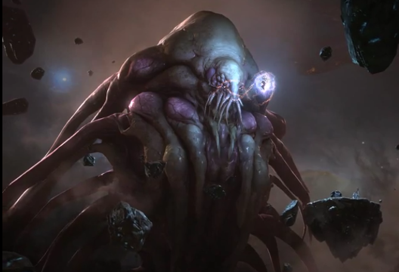

The Xel`naga
 The xel'naga are a seemingly extinct race of extragalactic scientists. They arrived in the Milky Way Galaxy in their worldships, and there they began manipulating various species, intending to create something with purity of form and purity of essence, as a necessary part of their life cycle. They first modified the protoss, an intelligent psychic species they discovered on the outlying world of Aiur. To their joy, they discovered the protoss had both purity of form and essence. However, the xel'naga pushed their creation too far, causing their psychic link to disappear and their purity of essence to vanish. The protoss fell into madness as the xel'naga abandoned them. The xel'naga discovered another species, the zerg, on the central world of Zerus. These small insectoids demonstrated purity of essence. The xel'naga created the Overmind, which contained their sentient desires, holding them together with a hivemind. However, the Overmind became aware of the xel'naga's presence and, upon acquiring space flying breeds, ordered its minions to attack the worldships. The greater whole of the xel'naga race was wiped out.